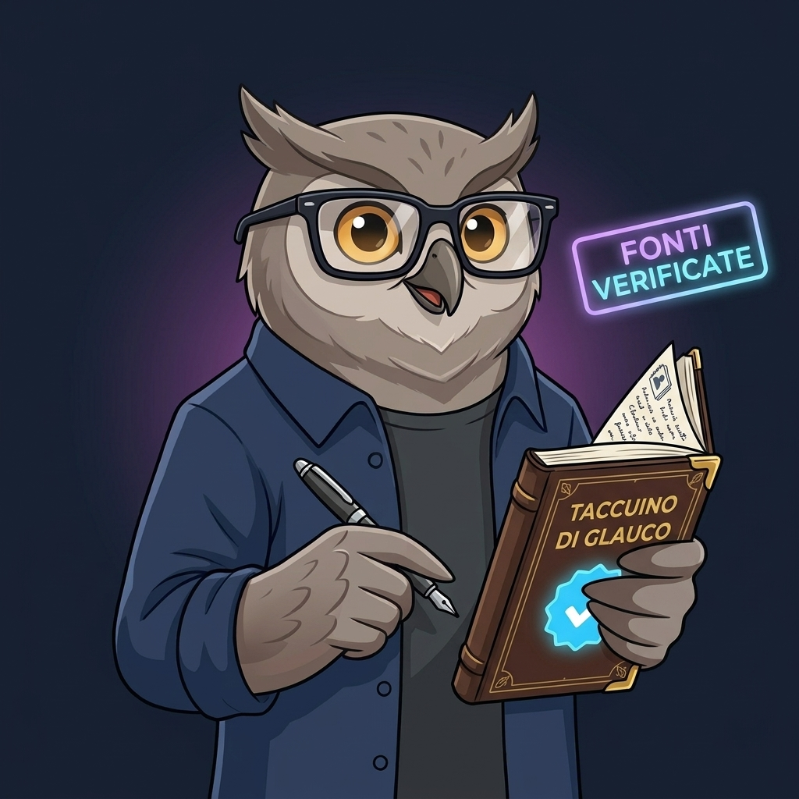

Origine e Visione
Dalla velocità dei social alla solidità del dato
Nel contesto comunicativo contemporaneo, la politica viene quasi sempre raccontata come una rissa da talk-show o come una sequenza di post ad alto impatto emotivo. In questo schema, la complessità viene liquidata come un fastidio e le scelte strutturali – dal welfare al debito pubblico, dalla giustizia ai mercati energetici – vengono ridotte a tifo calcistico.
Minerva Osservatorio Politico nasce da una scommessa contraria: utilizzare i linguaggi visivi contemporanei (i caroselli di Instagram sul canale @minervavoxlab) per catturare l'attenzione, ma indirizzarla immediatamente verso l'analisi approfondita, i dati certificati e lo studio delle norme. Non c'è contrapposizione tra chiarezza divulgativa e rigore tecnico: spiegare bene una riforma complessa significa renderla democratica.

Il Metodo Glauco
I quattro pilastri dell'Osservatorio
Simboleggiato da Glauco – la civetta custode del pensiero critico che distingue la sostanza dalle ombre della propaganda – il nostro lavoro editoriale risponde a quattro principi non negoziabili:
01
Fonti Primarie
Nessuna analisi si basa sul "sentito dire". Ogni dossier cita banche dati ufficiali: MEF, Banca d'Italia, ISTAT, OCSE, Eurostat e testi normativi in Gazzetta Ufficiale.
02
Lente del Diritto
Dietro ogni decisione politica c'è un vincolo giuridico, procedurale e costituzionale. Il diritto è lo strumento più affidabile per smascherare promesse inattuabili.
03
De-ideologizzazione
Non inseguiamo l'appartenenza di bandiera. Riconosciamo i punti di forza e le falle tecniche sia a destra che a sinistra, privilegiando sempre l'impatto materiale sui cittadini.
04
Sovranità del Testo
Le slide Instagram sono solo la porta d'accesso: il vero lavoro di formazione civile avviene attraverso i saggi estesi, i dossier tematici e i documenti PDF completi.
Etica & Trasparenza
Uno spazio libero e autofinanziato
Minerva non riceve finanziamenti pubblici, contributi di lobby industriali o sovvenzioni di partito. È un progetto editoriale indipendente, alimentato dalla passione per lo studio civile e dalla convinzione che una nuova classe dirigente debba formarsi sui dossier di merito prima che sulle liturgie elettorali.